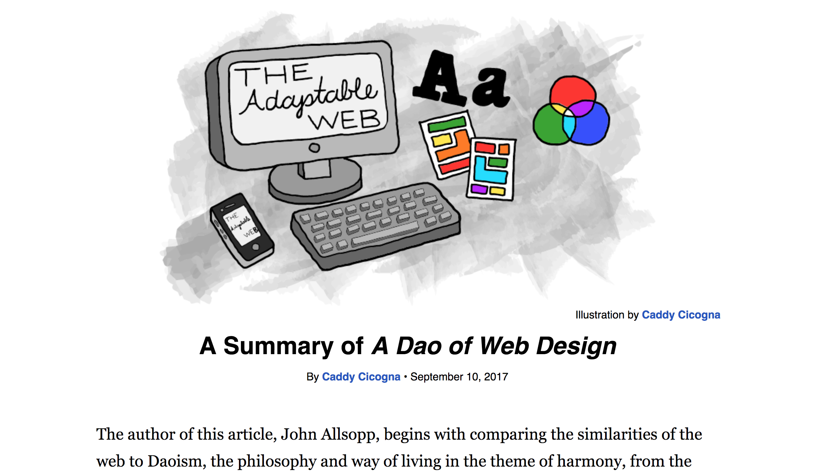
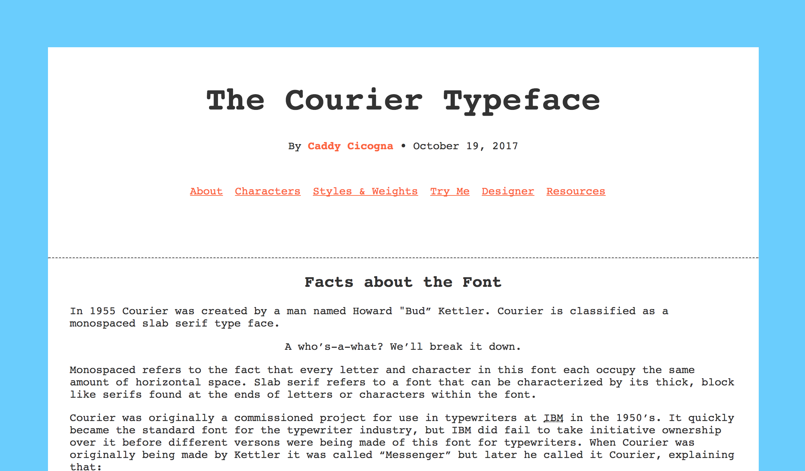
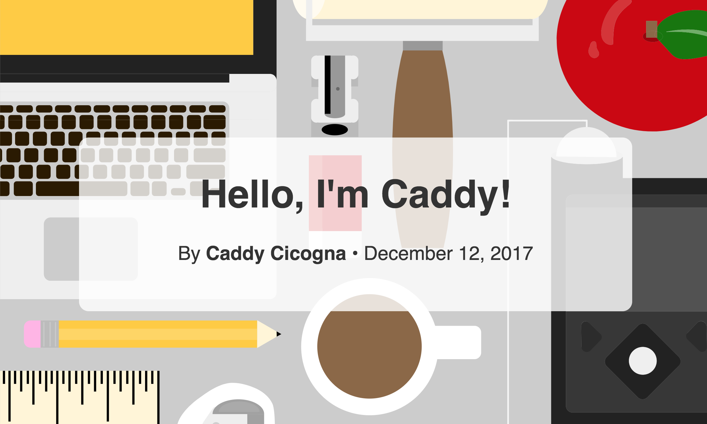

Web Authoring 1: A Review
Project 1
Ebb and Flow

Visit the web page Ebb and Flow By Caddy Cicogna • September 10, 2017
Project 2
Content First

Visit the web page Content First By Caddy Cicogna • October 19, 2017
Project 3
Final- Single Serving

Visit the web page Final-Single Serving By Caddy Cicogna • December 12, 2017